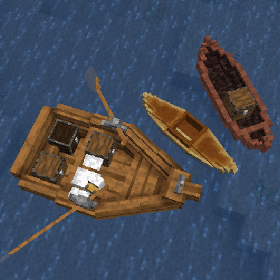
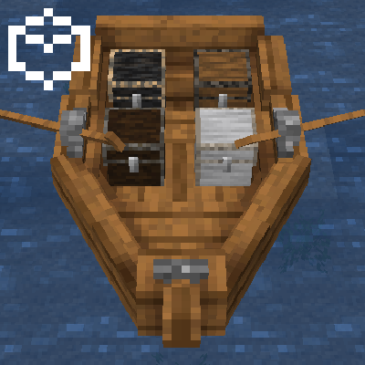
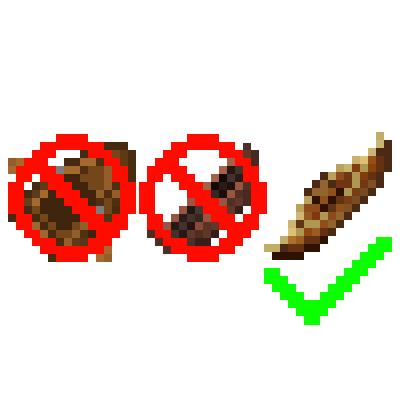
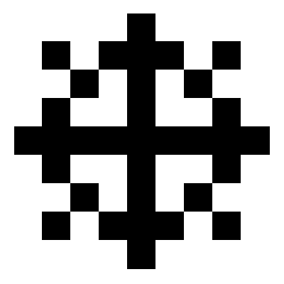
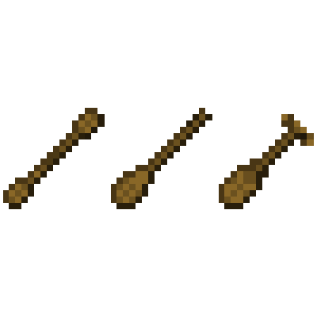
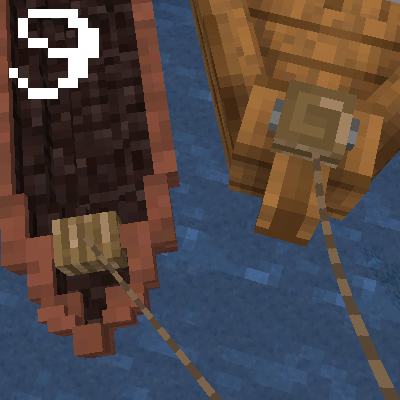
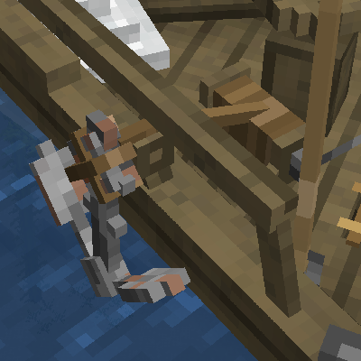
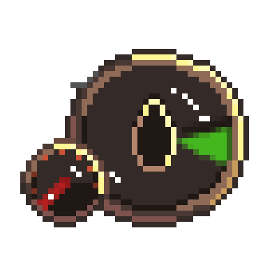
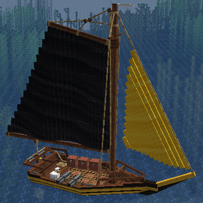

Начало пути: Лодки
Создание и использование лодки может оказаться сложнее, чем вы привыкли, но нет ничего лучше, чем построить идеальное судно и отправиться в открытые моря. Внимательно прочитайте это руководство и узнайте все тонкости резьбы, крафта, сооружения, гребли, управления и кастомизации лодки по своему усмотрению.
Путешествовать по миру или просто по своей местности часто лучше всего осуществлять по судоходным водным путям.
Кастомизация
На лодки можно устанавливать блоки! Как и при размещении блока на суше, нажмите ПКМ, удерживая сундук, наковальню или верстак, чтобы добавить его на лодку. Нажмите ПКМ, чтобы получить к нему доступ. Если вы не можете разместить блок в определенном месте, вероятно, это место пилота! Вы не сможете управлять лодкой, если на пути стоит блок! Вы можете убрать блоки, разбив их, как обычно.
Лодки как предметы
Они больше не существуют, за исключением каяка! Если вы сломаете лодку, то она уронит только некоторые свои компоненты! Это означает, что вам понадобится каяк, если вы хотите переносить лодку через сушу, а также то, что вам может понадобиться построить доки для более крупных судов.
Перевозка животных
Как и всегда, вы можете перемещать животных с помощью лодок! Однако имейте в виду, что более крупные животные, такие как лошади, поместятся только в достаточно большие лодки. Если животное находится в лодке и мешает вам, вам достаточно присесть и нажать ПКМ, чтобы выбросить его из лодки. Животные становятся беспокойными через 2 дня в лодке и покидают ее самостоятельно через 3 дня.
Управление
Каждая лодка имеет специальное сиденье, на котором нужно сидеть, чтобы управлять лодкой.
Весла
Если вам кажется, что ваша лодка движется медленно, проверьте, держите ли вы в руках подходящее весло или установлены ли весла в держателях для весел. В некоторых лодках несколько игроков могут грести, чтобы лодка двигалась быстрее.
Шварт-ые утки и поводки
Большинство лодок имеют хотя бы одну швартовую утку. Вы можете прикрепить поводок к швартовой утке и использовать его, чтобы тянуть лодку, а также подтягивать небольшие лодки к берегу или тоскать по плитам. Поводки также можно использовать для прикрепления лодок к заборам, а прикрепление двух швартовых уток к забору позволит вам легко швартовать большие лодки. Как вы поняли, вам придется активно использовать поводки, чтобы ваши лодки не уплыли!
Якори
Большие лодки имеют якоря, которые можно использовать для полной остановки лодки, при условии, что якорь закреплен на дне и паруса не развернуты. Лодка все равно будет поворачиваться под воздействием ветра, пока она стоит на якоре. Найдите значок якоря, расположенный на лебедке (якорной лебедке), и нажмите ПКМ, чтобы опустить и поднять якорь.
Якорь с лебедкой на шлюпе.
Паруса
Парусные суда, конечно же, имеют паруса. Вам нужно будет развернуть их, чтобы правильно управлять лодкой. Найдите треугольную иконку паруса и нажмите ПКМ, чтобы развернуть каждый парус. Поскольку большинство лодок имеют несколько парусов, вы можете комбинировать их для контроля скорости.

На этом шлюпе развернуты как стаксель (слева), так и грот (справа).
Плавание под парусами
В отличие от кораблей, к которым вы, возможно, привыкли, плавание под парусами — это навык в Firma: Civilization. Когда вы управляете парусным судном, появится новый элемент интерфейса, отображающий скорость и направление ветра, а также скорость лодки. Цвет стрелки ветра будет указывать на сложность плавания в данном направлении. Используйте клавиши движения вперед и назад, чтобы установить угол парусов, и экспериментируйте, чтобы найти наилучший угол ветра.
Интерфейс парусов поможет вам контролировать судно.
Покраска
Любая лодка, построенная с помощью корабельной обшивки, может быть окрашена, а любой парус может быть окрашен индивидуально. Просто держите краситель в руке и нажмите ПКМ, когда увидите значок кисти, чтобы покрасить корпус или окрасить парус. Более крупные лодки имеют уникальные узоры для каждого цвета краски.
Покрашенные паруса и корпус.
Повреждения и ремонт
Поврежденная лодка начнет покрываться трещинами. Для любой лодки, построенной из корабельной обшивки, используйте соответствующие доски для ремонта. При 90% повреждении лодка начнет набирать воду, а при 100% — утонет! Это не относится к каякам.